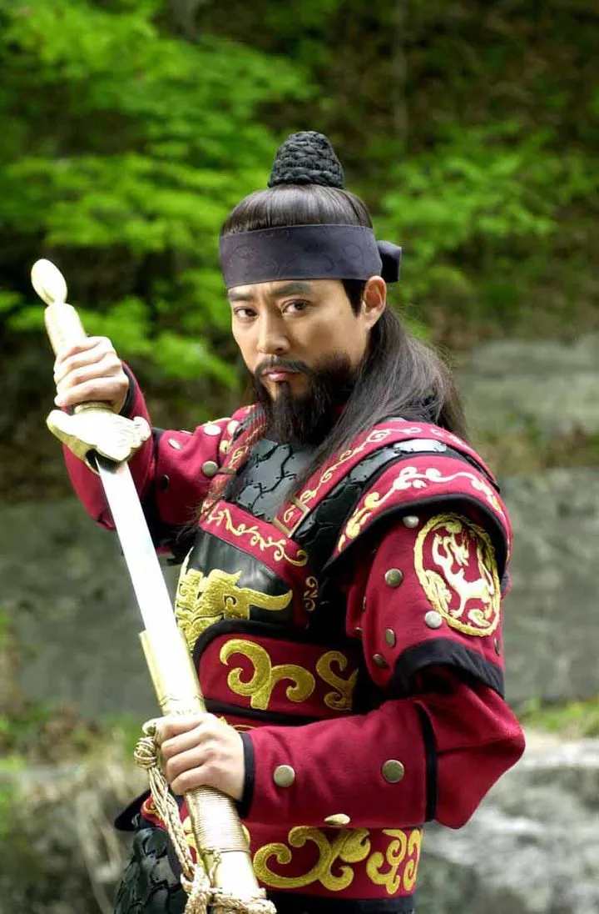
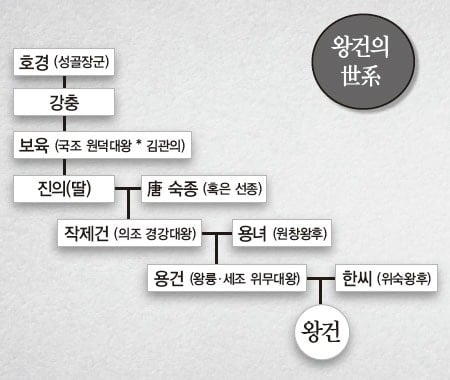
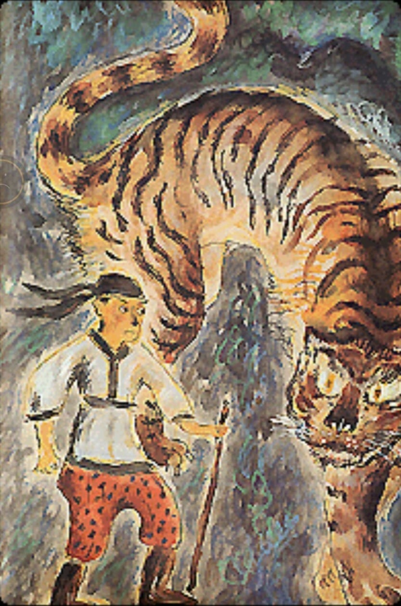
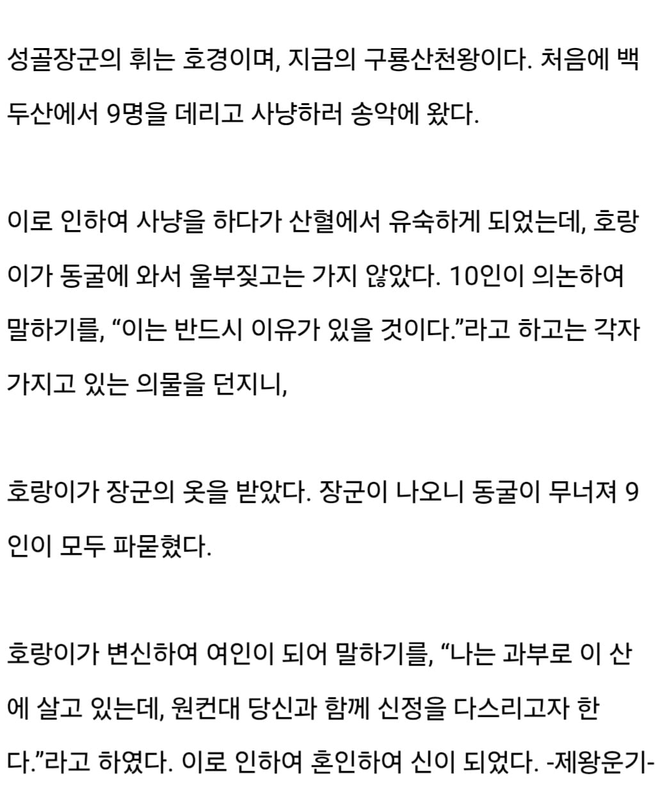

과부 호랑이 신과 결혼했다고 함
https://db.history.go.kr/goryeo/level.do?levelId=mujw_002r_0130_0010
기록 출처




과부 호랑이 신과 결혼했다고 함
https://db.history.go.kr/goryeo/level.do?levelId=mujw_002r_0130_0010
기록 출처
퍼리네


할아버지는 용왕의 딸이랑 결혼했잖아. 집안 내력이 ;;;;
대충 호랑이 부족이 어쩌고 저쩌고
여기도 러시아 사람이랑 결혼한건가
조상은 퍼리, 할아버지는 스케일리, 왕건 가문은 대체...
(고양이의 혓바닥엔 가시 돌기가 있어서 기분 좋다는 댓글)
환웅을 두고 곰에게 밀려난 한을 3천년 만에 푸는 거야?
오이오이~ 아이츠 패배 히로인 호랑이녀(토라온나) 잖아 WWWWWWW
곰 보고 서는건 한국인 종특이라 이해했는데 왜 호랑이 봐도 서는지 이유를 드디어 알았다
역시 모솔보단 돌싱이

좀 거친 요약) 한국인은 퍼리충이다
저게 호떡의 기원이니라
cm29가 갑자기 생각나네. 재밌게 읽었는데.
고려의 고대 동맹 돌궐도 시조가 늑대임 ㅎㅎ 유구한 퍼리동맹
성골장군이 동굴밖으로 나오니 동굴이 무너져서 9명이 모두 파묻혀 죽었다 <- 이 부분이 너무 뜬금없는 반전이라 안 잊혀지는 전설
증조할머니의 증조할아버지네